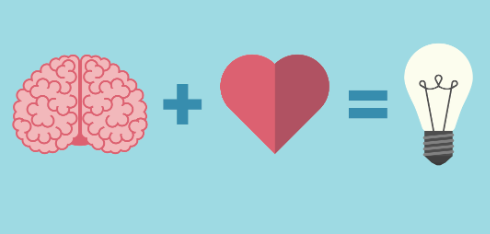

Competências Socioemocionais
Competências socioemocionais são habilidades que envolvem a capacidade de reconhecer e gerenciar emoções,
estabelecer e alcançar metas, tomar decisões responsáveis, desenvolver empatia e manter relacionamentos
saudáveis
Algumas das Competências Socioemocionais
-
Inteligência Emocional

A inteligência emocional é a capacidade de reconhecer, compreender e gerenciar as próprias emoções,
bem
como as emoções dos outros. Ela envolve a habilidade de perceber e interpretar os sinais emocionais
de
maneira precisa, e responder a eles de maneira adequada. Aqui estão alguns aspectos fundamentais da
inteligência emocional:
-
Autoconhecimento:
É a capacidade de reconhecer e compreender as próprias emoções,
incluindo
seus
impulsos, valores e atitudes. Isso envolve estar ciente de como você se sente em diferentes
situações e entender por que você sente dessa maneira.
-
Autorregulação:
Envolve a capacidade de controlar as próprias emoções e impulsos. Isso
inclui
lidar com o estresse, controlar os impulsos e adiar a gratificação, bem como regular os
estados
emocionais para se adaptar a diferentes situações.
-
Motivação:
Refere-se à capacidade de direcionar as emoções para alcançar objetivos
pessoais
e
profissionais. Isso envolve ter metas claras, perseverança diante de desafios e uma forte
motivação intrínseca para o sucesso.
-
Reconhecimento das emoções nos outros:
É a habilidade de entender as emoções das outras
pessoas,
interpretando sinais não verbais como expressões faciais, tom de voz e linguagem corporal.
Isso
ajuda a melhorar a comunicação e os relacionamentos interpessoais.
-
Habilidades sociais:
Envolve a capacidade de se relacionar bem com os outros, construir
relacionamentos positivos e trabalhar de forma eficaz em equipe. Isso inclui habilidades
como
comunicação eficaz, empatia, resolução de conflitos e liderança.
Desenvolver a inteligência emocional pode melhorar significativamente a qualidade de vida
pessoal e profissional, aumentando a capacidade de lidar com desafios, gerenciar
relacionamentos
e alcançar metas.
-
Empatia
A empatia é a capacidade de compreender e compartilhar os sentimentos, pensamentos e experiências de
outra pessoa. É essencialmente a habilidade de se colocar no lugar de outra pessoa, tentando compreender
suas perspectivas, sentimentos e emoções, sem necessariamente concordar com elas.
-
Compreensão das Emoções:
Envolve a capacidade de reconhecer e entender as emoções dos
outros.
Isso inclui perceber sinais não verbais, como expressões faciais, tom de voz e linguagem
corporal, e interpretar o que esses sinais podem significar em termos de sentimentos e estados
emocionais.
-
Comunicação Empática:
Envolve ouvir ativamente e responder de maneira sensível às
emoções e necessidades das outras pessoas. Isso inclui demonstrar interesse genuíno, fazer
perguntas abertas para entender melhor, validar os sentimentos da pessoa e oferecer apoio quando
necessário.
-
Respeito pelas Perspectivas:
A empatia também envolve respeitar e valorizar as
perspectivas e experiências dos outros, mesmo que sejam diferentes das suas próprias. Isso
significa reconhecer que cada pessoa tem uma história de vida única que molda suas opiniões e
sentimentos.
-
Tomada de Decisão Empática:
A empatia também pode influenciar a maneira como tomamos
decisões e nos relacionamos com os outros. Ao considerar os sentimentos e perspectivas das
pessoas envolvidas, podemos tomar decisões mais informadas e sensíveis.
A empatia é uma habilidade crucial para construir relacionamentos saudáveis, melhorar a
comunicação interpessoal, resolver conflitos e promover a compreensão mútua. É uma qualidade
valorizada em muitos aspectos da vida, desde as relações pessoais até o ambiente de trabalho e a
sociedade como um todo.
-
Comunicação Eficaz
A comunicação eficaz é a habilidade de transmitir uma mensagem de forma clara, compreensível e precisa,
de modo que seja entendida pelo receptor da maneira esperada. É fundamental em todos os aspectos da
vida, desde relacionamentos pessoais até ambiente de trabalho e interações sociais. Aqui estão alguns
elementos-chave da comunicação eficaz:
-
Clareza:
É importante expressar suas ideias de maneira simples e direta, evitando
ambiguidades
ou palavras desnecessárias. Certifique-se de que sua mensagem seja facilmente compreensível pelo
receptor.
-
Coerência:
Sua comunicação deve ser consistente, tanto verbal quanto não verbalmente.
Suas
palavras devem estar alinhadas com suas ações e expressões faciais, transmitindo uma mensagem
congruente.
-
Escuta Ativa:
Esteja presente e concentrado durante as interações. Ouça atentamente o
que o
outro tem a dizer, sem interromper, e faça perguntas para esclarecer pontos importantes.
-
Feedback:
Dê e receba feedback de forma construtiva. Isso ajuda a garantir que a
mensagem tenha
sido compreendida corretamente e permite ajustes para uma comunicação mais eficaz no futuro.
-
Respeito:
Trate os outros com cortesia e respeito durante as interações. Evite
comportamentos
que possam ser percebidos como desrespeitosos ou ofensivos.
-
Adaptação:
Esteja disposto a adaptar sua comunicação de acordo com o contexto e as
necessidades
do receptor. Isso pode incluir ajustar seu tom de voz, escolher palavras adequadas ou usar
diferentes formas de comunicação, como escrita, verbal ou não verbal.
-
Objetividade:
Comunique-se de forma imparcial, baseando-se em fatos e evidências sempre
que
possível. Evite preconceitos, suposições ou generalizações que possam distorcer a mensagem.
Praticar e aprimorar esses elementos ao longo do tempo pode ajudá-lo a se tornar um comunicador
mais eficaz, capaz de construir relacionamentos mais fortes, resolver conflitos e alcançar
objetivos com sucesso em diversas situações.
-
Resolução de Conflitos
A resolução de conflitos é o processo de encontrar uma solução para uma disputa ou problema entre duas
ou mais partes. É uma habilidade essencial em diversas áreas da vida, incluindo relações pessoais,
ambientes de trabalho, negócios e até mesmo relações internacionais. Aqui estão algumas etapas comuns
para resolver conflitos de forma eficaz:
- Identificação do Conflito: Reconhecer e entender claramente qual é o problema ou
desentendimento.
- Comunicação Aberta: Estabelecer um canal de comunicação aberto e honesto entre as partes
envolvidas, permitindo que cada lado expresse seus sentimentos, preocupações e perspectivas.
- Escuta Ativa: Ouvir atentamente as preocupações e pontos de vista de todas as partes envolvidas,
mostrando empatia e compreensão.
- Foco nos Interesses: Concentrar-se nos interesses subjacentes por trás das posições declaradas.
Muitas vezes, as pessoas têm necessidades ou preocupações subjacentes que podem não ser
evidentes inicialmente.
- Geração de Opções: Buscar e criar diferentes soluções possíveis para resolver o conflito de
forma satisfatória para todas as partes envolvidas.
- Avaliação das Opções: Analisar as opções geradas, considerando seus prós, contras e impactos
potenciais.
- Negociação: Tentar chegar a um acordo mutuamente aceitável por meio de discussões e
compromissos.
- Compromisso e Acordo: Chegar a uma solução que todas as partes envolvidas possam concordar,
mesmo que seja necessário fazer concessões.
- Implementação do Acordo: Colocar em prática as medidas necessárias para implementar o acordo
alcançado.
- Acompanhamento e Avaliação: Monitorar o acordo ao longo do tempo para garantir que ele seja
eficaz e ajustar conforme necessário.
Essas etapas podem variar dependendo da natureza do conflito e das pessoas envolvidas, mas
geralmente fornecem um guia útil para lidar com conflitos de maneira construtiva e colaborativa.
-
Trabalho em equipe
O trabalho em equipe é a colaboração de um grupo de pessoas com habilidades, conhecimentos e
experiências diversas para atingir um objetivo comum. É uma parte fundamental do ambiente de trabalho em
muitos setores e organizações. Aqui estão alguns aspectos importantes do trabalho em equipe:
-
Comunicação eficaz:
A comunicação clara e aberta é essencial para o sucesso do trabalho
em
equipe. Isso inclui compartilhar informações, ideias e feedback de maneira transparente e
respeitosa.
-
Divisão de tarefas:
Para aproveitar ao máximo as habilidades e experiências de cada
membro da
equipe, as tarefas devem ser divididas de maneira justa e eficiente. Isso pode envolver atribuir
responsabilidades com base nas habilidades individuais e no interesse em certas áreas.
-
Colaboração:
Os membros da equipe devem estar dispostos a trabalhar juntos,
contribuindo com
suas habilidades e conhecimentos para alcançar objetivos compartilhados. Isso envolve respeitar
as ideias dos outros, ouvir ativamente e estar aberto a compromissos.
-
Definição de metas claras:
É importante que a equipe tenha uma compreensão clara dos
objetivos a
serem alcançados e dos papéis de cada membro na consecução desses objetivos. Metas específicas,
mensuráveis, alcançáveis, relevantes e com prazos definidos (SMART) podem ajudar a manter o foco
e a motivação da equipe.
-
Resolução de conflitos:
Conflitos podem surgir em qualquer equipe, mas é importante
abordá-los
de maneira construtiva e colaborativa. Isso pode envolver a comunicação aberta de preocupações,
a busca de soluções de compromisso e a manutenção de um ambiente de trabalho positivo.
-
Confiança:
A confiança entre os membros da equipe é fundamental para o trabalho em
equipe
eficaz. Isso inclui confiar nas habilidades e no compromisso de cada membro, bem como na
capacidade da equipe como um todo de alcançar seus objetivos.
-
Flexibilidade:
As equipes devem estar dispostas a se adaptar às mudanças nas
circunstâncias ou
nos requisitos do projeto. Isso pode envolver a revisão de estratégias, a reatribuição de
tarefas ou a adoção de novas abordagens conforme necessário.
-
Celebração de sucessos:
Reconhecer e celebrar as conquistas da equipe é importante para
manter a
motivação e o moral elevados. Isso pode incluir reconhecimento público, recompensas ou
simplesmente expressar gratidão pelo trabalho árduo e dedicação de cada membro da equipe.
Quando esses elementos são combinados de forma eficaz, o trabalho em equipe pode levar a
resultados significativos e impactantes.
-
Resiliência
Resiliência é a capacidade de se adaptar e se recuperar diante de adversidades, desafios ou situações de
estresse. É a habilidade de enfrentar as dificuldades, superar obstáculos e seguir em frente com
determinação e força interior. A resiliência não significa evitar ou ignorar o sofrimento, mas sim lidar
com ele de forma saudável e construtiva. Aqui estão alguns aspectos importantes da resiliência:
-
Adaptação às adversidades:
A resiliência envolve a capacidade de se ajustar e se
adaptar a
situações difíceis ou imprevistas. Isso pode incluir mudanças inesperadas, perdas, falhas ou
desafios pessoais e profissionais.
-
Mentalidade positiva:
As pessoas resilientes tendem a ter uma mentalidade positiva,
focando em
soluções e oportunidades em vez de se concentrarem apenas nos problemas. Elas procuram aprender
com as experiências adversas e ver o lado positivo das coisas, mesmo em tempos difíceis.
-
Autoconhecimento e autoconfiança:
A resiliência muitas vezes está relacionada com um
forte senso
de autoconhecimento e autoconfiança. Ter uma compreensão clara de suas próprias habilidades,
valores e limitações pode ajudar a enfrentar desafios com mais confiança e determinação.
-
Rede de apoio:
Ter uma rede de apoio forte, como amigos, familiares, colegas ou
profissionais de
saúde mental, pode ser crucial para construir e manter a resiliência. O apoio social pode
fornecer conforto emocional, encorajamento e recursos práticos para lidar com dificuldades.
-
Flexibilidade:
Ser resiliente requer flexibilidade mental e emocional. Isso envolve ser
capaz de
se adaptar a mudanças de planos, abordagens alternativas e perspectivas diferentes quando
necessário.
-
Foco no controle pessoal:
As pessoas resilientes tendem a se concentrar no que podem
controlar,
em vez de se preocuparem com coisas fora de seu controle. Elas buscam soluções práticas e tomam
medidas proativas para lidar com os desafios que enfrentam.
-
Autocuidado:
Cuidar de si mesmo física, mental e emocionalmente é essencial para
desenvolver e
manter a resiliência. Isso inclui praticar hábitos saudáveis de sono, alimentação e exercício,
bem como dedicar tempo para atividades que tragam prazer e relaxamento.
-
Aceitação e adaptação:
A resiliência também envolve aceitar as circunstâncias que não
podem ser
mudadas e encontrar maneiras de se adaptar a elas da melhor forma possível. Isso pode exigir uma
certa dose de paciência, compreensão e compaixão consigo mesmo e com os outros.
Desenvolver a resiliência é um processo contínuo que pode ser cultivado ao longo do tempo com
prática, auto-reflexão e apoio adequado. Embora nem sempre seja fácil, a resiliência pode ajudar
as pessoas a enfrentarem os desafios da vida com mais força, coragem e esperança.
-
Autoconhecimento
O autoconhecimento é o processo de compreensão e consciência de si mesmo, incluindo suas emoções,
pensamentos, comportamentos, habilidades, limitações, valores e motivações. É uma jornada contínua de
exploração interna que permite que uma pessoa desenvolva uma compreensão mais profunda de quem ela é
realmente. Aqui estão alguns aspectos importantes do autoconhecimento:
-
Reflexão interna:
O autoconhecimento começa com a capacidade de se observar
internamente,
refletindo sobre seus próprios pensamentos, sentimentos e comportamentos. Isso pode envolver a
prática de mindfulness, meditação ou simplesmente reservar um tempo para contemplação e
introspecção.
-
Identificação de emoções:
Uma parte fundamental do autoconhecimento é ser capaz de
reconhecer e
nomear suas próprias emoções. Isso inclui identificar quando você está feliz, triste, com raiva,
ansioso ou qualquer outra emoção, bem como entender o que desencadeia essas emoções em você.
-
-
Exploração de valores e crenças:
Conhecer seus valores pessoais e crenças é essencial
para
entender o que é importante para você na vida e orientar suas escolhas e decisões. Isso envolve
questionar suas próprias crenças, examinar de onde elas vêm e se elas ainda são relevantes e
significativas para você.
-
Reconhecimento de habilidades e limitações:
O autoconhecimento também inclui ter uma
compreensão
honesta de suas próprias habilidades, talentos e áreas de força, bem como suas limitações e
áreas que precisam de desenvolvimento. Isso pode ajudá-lo a tomar decisões mais informadas sobre
seus objetivos e aspirações.
-
Aceitação de si mesmo:
O autoconhecimento envolve aceitar a si mesmo de maneira
incondicional,
com todas as suas falhas e imperfeições. Isso não significa que você não possa buscar mudanças e
crescimento pessoal, mas sim que você reconhece e valoriza sua própria humanidade.
-
Feedback externo:
Embora o autoconhecimento seja principalmente uma jornada interna, o
feedback
de outras pessoas também pode ser útil para entender como você é percebido pelos outros e para
identificar pontos cegos ou áreas de melhoria que podem não ser óbvias para você.
-
Desenvolvimento pessoal contínuo:
O autoconhecimento é um processo contínuo que se
desenvolve ao
longo do tempo. É importante estar aberto à aprendizagem e ao crescimento pessoal, buscando
constantemente novas experiências, desafios e oportunidades de autoexploração.
Desenvolver o autoconhecimento pode levar tempo e esforço, mas é uma jornada que pode trazer uma
maior clareza, autenticidade e sentido à sua vida. Ao conhecer a si mesmo mais profundamente,
você pode tomar decisões mais alinhadas com seus valores, encontrar maior satisfação e bem-estar
e construir relacionamentos mais autênticos e significativos com os outros.
-
Autocontrole
O autocontrole é a capacidade de regular e gerenciar suas próprias emoções, impulsos, pensamentos e
comportamentos, especialmente em situações desafiadoras, estressantes ou tentadoras. Envolve a
habilidade de resistir a impulsos imediatos em prol de metas de longo prazo e de manter a calma e a
compostura em momentos de estresse ou frustração. Aqui estão alguns aspectos importantes do
autocontrole:
-
Autoconsciência:
O autocontrole começa com a consciência de suas próprias emoções,
impulsos e
padrões comportamentais. Isso inclui a capacidade de reconhecer quando você está se sentindo
tentado, frustrado, irritado ou qualquer outra emoção que possa desencadear comportamentos
impulsivos.
-
Regulação emocional:
Uma parte fundamental do autocontrole é ser capaz de regular suas
próprias
emoções, evitando reações impulsivas e explosivas. Isso pode envolver técnicas como respiração
profunda, visualização positiva, ou simplesmente dar um passo para trás e dar tempo para as
emoções se acalmarem antes de responder.
-
Adiamento da gratificação:
O autocontrole também envolve a capacidade de adiar a
gratificação,
resistindo à tentação de ceder a impulsos imediatos em favor de objetivos de longo prazo. Isso
pode incluir coisas como resistir a comer um doce quando você está tentando perder peso ou adiar
uma compra impulsiva para economizar dinheiro.
-
Tomada de decisão consciente:
Ter autocontrole significa fazer escolhas conscientes e
deliberadas, em vez de agir por impulso. Isso envolve pesar as consequências de suas ações,
considerando seus valores e objetivos e escolhendo a melhor opção mesmo quando é difícil.
-
Resistência ao estresse:
O autocontrole também é importante para lidar com o estresse
de maneira
saudável e construtiva. Isso inclui manter a calma em situações estressantes, encontrar maneiras
produtivas de lidar com o estresse e evitar comportamentos de enfrentamento prejudiciais, como
evitação ou descontrole emocional.
-
Persistência e determinação:
Ter autocontrole muitas vezes está relacionado à
persistência e
determinação para superar obstáculos e alcançar metas desafiadoras. Isso envolve continuar
avançando mesmo quando você enfrenta contratempos ou dificuldades ao longo do caminho.
-
Autoavaliação e ajuste:
Desenvolver o autocontrole requer autoavaliação constante e
disposição
para ajustar seu comportamento conforme necessário. Isso pode envolver aprender com seus erros,
buscar feedback de outras pessoas e estar aberto a mudanças e crescimento pessoal.
O autocontrole não é algo que as pessoas possuem de forma inata; é uma habilidade que pode ser
desenvolvida e aprimorada ao longo do tempo com prática, conscientização e esforço deliberado.
Ter um alto nível de autocontrole pode ser uma vantagem significativa em muitos aspectos da
vida, ajudando a construir relacionamentos saudáveis, alcançar metas importantes e lidar com
desafios de forma eficaz.
-
Gestão do Estresse
A gestão do estresse envolve técnicas e estratégias para lidar com os desafios e pressões da vida de
maneira saudável e eficaz. O estresse é uma resposta natural do corpo a situações que são percebidas
como ameaçadoras ou desafiadoras, mas quando não gerenciado adequadamente, pode ter efeitos prejudiciais
à saúde física e mental. Aqui estão algumas maneiras de gerenciar o estresse de forma eficaz:
-
Identificação de gatilhos de estresse:
O primeiro passo para gerenciar o estresse é
identificar
as situações ou eventos que desencadeiam essa resposta em você. Isso pode incluir coisas como
prazos apertados, conflitos interpessoais, preocupações financeiras, entre outros.
-
Desenvolvimento de habilidades de enfrentamento:
Desenvolver habilidades de
enfrentamento
saudáveis é essencial para lidar com o estresse. Isso pode incluir técnicas de relaxamento, como
meditação, respiração profunda, ioga ou exercícios de relaxamento muscular progressivo.
-
Estabelecimento de limites saudáveis:
É importante estabelecer limites claros e
realistas em sua
vida para evitar a sobrecarga de estresse. Isso pode envolver aprender a dizer "não" quando
necessário, delegar tarefas quando possível e estabelecer prioridades claras.
-
Prática de autocuidado:
Cuidar de si mesmo é fundamental para gerenciar o estresse de
forma
eficaz. Isso inclui manter hábitos saudáveis de sono, alimentação e exercício, bem como reservar
tempo para atividades que tragam prazer e relaxamento.
-
Administração do tempo:
Gerenciar seu tempo de maneira eficaz pode ajudar a reduzir o
estresse
relacionado a prazos apertados e múltiplas demandas. Isso pode envolver a organização de sua
agenda, a definição de prioridades e a prática de técnicas de gestão do tempo, como a técnica
Pomodoro.
-
Busca de apoio social:
Ter uma rede de apoio forte pode ajudar a reduzir o estresse,
proporcionando conforto emocional, encorajamento e recursos práticos. Isso pode incluir amigos,
familiares, colegas de trabalho ou profissionais de saúde mental.
-
Mudança de perspectiva:
Às vezes, mudar a maneira como você pensa sobre uma situação
estressante
pode ajudar a reduzir o estresse associado a ela. Isso pode envolver desafiar pensamentos
negativos ou distorcidos e procurar por aspectos positivos ou oportunidades de crescimento em
uma situação desafiadora.
-
Procura de ajuda profissional:
Se o estresse estiver interferindo significativamente em
sua vida
e você estiver tendo dificuldade em gerenciá-lo por conta própria, pode ser útil buscar a ajuda
de um profissional de saúde mental, como um terapeuta ou psicólogo.
A gestão do estresse não se trata de eliminar completamente o estresse de sua vida, mas sim de
aprender a lidar com ele de maneira saudável e eficaz. Ao desenvolver habilidades de
enfrentamento e adotar estratégias de autocuidado, você pode reduzir os efeitos negativos do
estresse e melhorar sua qualidade de vida.
-
Persistência
A persistência é a qualidade de continuar perseverando e trabalhando em direção a um objetivo, mesmo
quando se enfrenta dificuldades, obstáculos ou fracassos. É a capacidade de manter o foco e a
determinação, mesmo quando as coisas não estão indo como planejado. Aqui estão algumas características
importantes da persistência:
-
Foco nos objetivos:
Pessoas persistentes mantêm um claro foco em seus objetivos e não
se deixam
distrair por contratempos ou distrações. Elas têm uma visão clara do que desejam alcançar e
estão dispostas a fazer o que for necessário para chegar lá.
-
Motivação intrínseca:
A persistência muitas vezes vem de uma fonte interna de
motivação. Pessoas
persistentes são impulsionadas por um forte desejo de sucesso e realização pessoal, e encontram
satisfação no próprio processo de trabalhar em direção aos seus objetivos, independentemente das
recompensas externas.
-
Adaptação:
Ser persistente não significa apenas manter o mesmo curso de ação,
independentemente
das circunstâncias. Pessoas persistentes são capazes de se adaptar e ajustar suas estratégias
conforme necessário para superar obstáculos e encontrar novas maneiras de avançar em direção aos
seus objetivos.
-
Aprendizado contínuo:
Pessoas persistentes veem os fracassos como oportunidades de
aprendizado e
crescimento, em vez de como indicações de incapacidade. Elas estão dispostas a aprender com seus
erros e a fazer ajustes em sua abordagem conforme necessário, em vez de desistir quando as
coisas não saem como planejado.
-
Resistência à negatividade:
Pessoas persistentes são capazes de lidar com críticas e
feedback
negativo sem perder a confiança ou o ímpeto. Elas têm uma atitude positiva e acreditam em si
mesmas e em sua capacidade de superar desafios.
-
Persistência inteligente:
Por fim, é importante destacar que a persistência não é
apenas
trabalhar arduamente sem descanso. É também saber quando é hora de ajustar suas estratégias,
descansar e recuperar energias, ou mesmo reconhecer quando um objetivo não é mais alcançável e
seguir em frente em direção a novas metas.
A persistência é uma qualidade essencial para alcançar o sucesso em qualquer área da vida, pois
é muitas vezes a chave para superar desafios e alcançar grandes realizações. Ao desenvolver a
persistência, você pode aumentar suas chances de alcançar seus objetivos e transformar seus
sonhos em realidade.